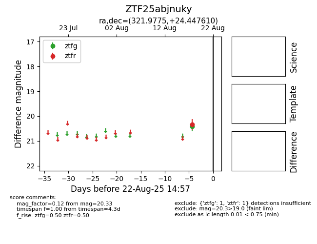

Target ZTF25abjnuky at 2025-08-22 14:57, see:
FINK: fink-portal.org/ZTF25abjnuky
Lasair: lasair-ztf.lsst.ac.uk/objects/ZTF25abjnuky
ALeRCE: alerce.online/object/ZTF25abjnuky
alt names
ZTF25abjnuky (ztf,alerce)
coordinates:
equatorial (ra, dec) = (321.9775,+24.44761)
galactic (l, b) = (74.6748,-18.81127)
photometry
last ztfg=20.41, ztfr=20.33
1 ztfg, 1 ztfr detections
